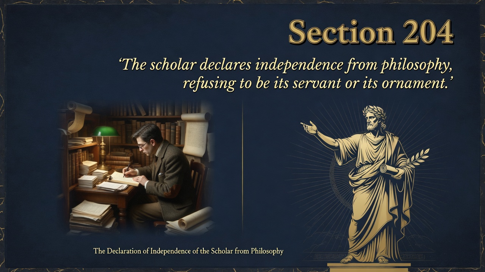
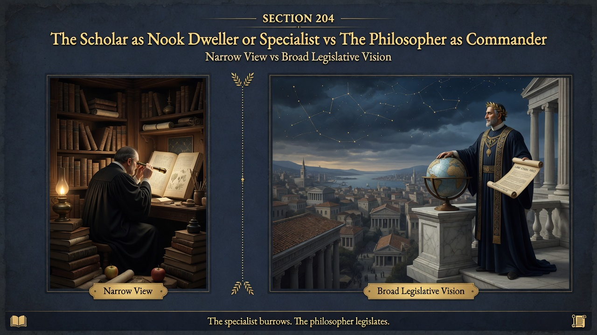
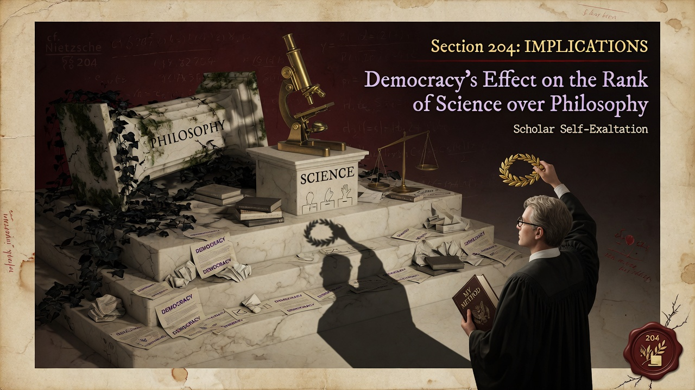

Part Six: We Scholars • Beyond Good and Evil
Scholars have started acting like they outrank philosophers, which Nietzsche sees as a democratic mix-up of roles. Science freed itself from philosophy and then glorified narrow expertise. Knowing facts is not the same as knowing what life is for.
Basically: section 204 opens Part Six by protesting an that is establishing itself between science and philosophy.. The scientific man has declared his independence from philosophy, and the scholar now glorifies himself.. This emancipation, Nietzsche argues, is one of the subtler effects of the democratic order and confusion.. The self-exaltation of the scholar stands in full bloom, yet the smell is not sweet.. Nietzsche insists on the higher rank of the philosopher.. the philosopher is the one who creates values, sets goals, and takes responsibility for the direction of kn.... The scholar serves, organizes, and refines within the framework already given.. When the scholar claims supremacy, rank is inverted and the commanding, legislative function is lost.
science and scholarship are indispensable instruments, but they are not self-sufficient. Without the philosopher who gives direction and meaning, they become busywork that ultimately serves whatever values happen to dominate — often the leveling values of the herd.
The contemporary university is dominated by the scholar-model: specialized research, peer review, grant-chasing, and the professionalization of knowledge. Philosophy departments themselves often model themselves on the sciences or retreat into narrow analytic problems. The result is a loss of the synthetic, legislative voice that could orient technology, politics, and culture toward higher ends. The free spirit asks whether our institutions still produce or even recognize the type capable of commanding knowledge rather than merely accumulating and democratizing it. ~280 words. Accurate to Kaufmann and Part Six opening.


